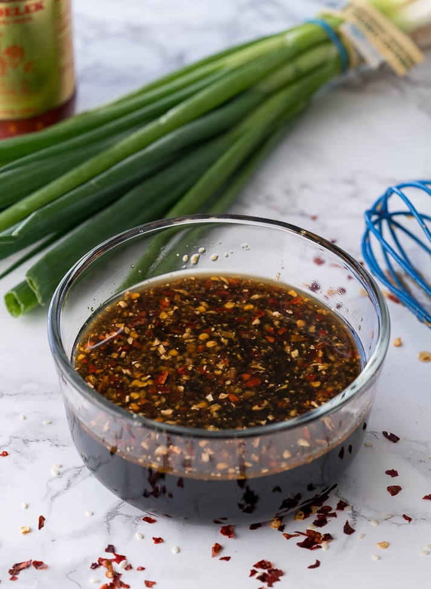
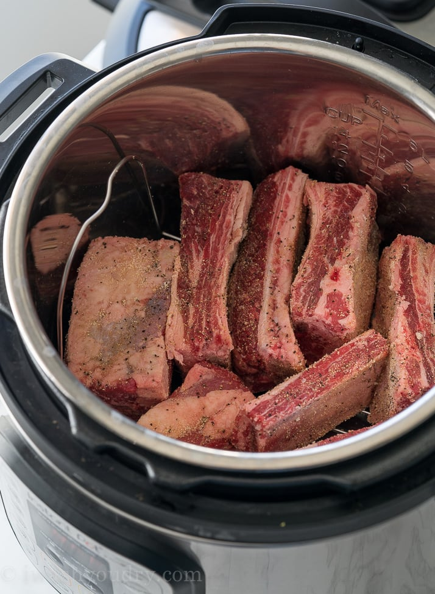

1 tsp each: garlic powder, onion powder, ground ginger, black pepper, salt
Sauce

3/4 cup soy sauce
1/4 cup brown sugar
1 tbsp rice vinegar
1/2 tbsp sesame oil
1 tsp minced ginger, fresh or 1/2 tsp ground ginger
1 tsp minced garlic, fresh or 1/2 tsp garlic powder
1 tsp chili garlic sauce, found in the Asian aisle of the grocery store
2 tbsp corn starch
Instructions
Place the rack into the insert of your pressure cooker and pour in 1 cup of water.
Combine 1 tsp each: garlic powder, onion powder, ground ginger, black pepper and salt
and rub this mixture all over the beef ribs. Place the beef ribs on the rack, so they are
above the water underneath.

Put the lid on, make sure the valve is in the sealed position, then cook on Manual HIGH Pressure for 30 minutes. Let the pressure naturally release for 10 minutes (do not open the valve for 10 minutes after the 30 minute cook time is over). Once it's released naturally for 10 minutes, finish with a quick release (open the valve).
Meanwhile combine the ingredients for the sauce in a small saucepan over medium heat, whisking until smooth and thickened, about 5 minutes.
Turn the broiler on in your oven and place the beef short ribs on a foil lined baking sheet. Brush the sauce on all sides of the ribs and broil for 1 to 2 minutes on each side, until the sauce becomes glossy and sticky. Garnish with the sesame seeds and green onions if desired. Enjoy!